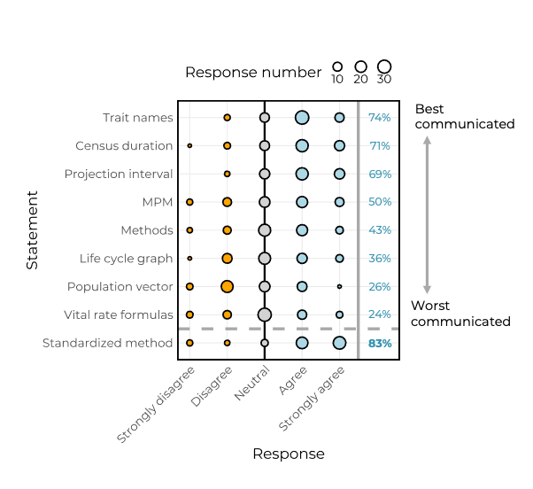
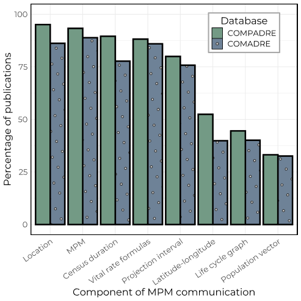
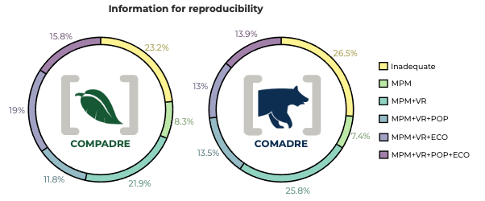

Un protocolo para informar sobre modelos discreto de estructura de población
“A standard protocol to report discrete stage-structured demographic information”
Samuel J. L. Gascoigne1 | Simon Rolph2 | Daisy Sankey1 | Nagalakshmi Nidadavolu1 | Adrian S. Stell Pičman1,3 | Christina M. Hernández4 | Matthew E. R. Philpott1 | Aiyla Salam1 | Connor Bernard1 | Erola Fenollosa1 | Young Jun Lee1 | Jessica McLean1 | Shathuki Hetti Achchige Perera1 | Oliver G. Spacey1 | Maja Kajin1,3 | Anna C. Vinton1 | C. Ruth Archer5 | Jean H. Burns6 | Danielle L. Buss7,8 | Hal Caswell9 | Judy P. Che-Castaldo10 | Dylan Z. Childs2 | Pol Capdevila11 | Aldo Compagnoni1,12,13 | Elizabeth Crone14 | Thomas H. G. Ezard15 | Dave Hodgson8 | Tiffany M. Knight12,13,16 | Owen R. Jones17 | Eelke Jongejans18,19 | Jenni McDonald20,21 | Brigitte Tenhumberg22 | Chelsea C. Thomas23 | Andrew J. Tyre2,4,25 | Satu Ramula26 | Iain Stott27 | Raymond L. Tremblay28,29,30 | Phil Wilson8 | James W. Vaupel31,‡ | Roberto Salguero-Gómez1,32,33
1Department of Biology, University of Oxford, Oxford, UK; 2Department of Animal & Plant Sciences, University of Sheffield, Sheffield, UK; 3Department of Biology, University of Ljubljana, Ljubljana, Slovenia; 4Department of Ecology and Evolutionary Biology, Cornell University, Ithaca, New York, USA; 5Institute of Evolutionary Ecology and Conservation Genomics, University of Ulm, Ulm, Germany; 6Department of Biology, Case Western Reserve University, Cleveland, Ohio, USA; 7Department of Archaeology, University of Cambridge, Cambridge, UK; 8College of Life and Environmental Sciences, University of Exeter, Penryn, UK; 9Institute for Biodiversity and Ecosystem Dynamics, University of Amsterdam, Amsterdam, The Netherlands; 10Branch of Species Status Assessment Science Support, U.S. Fish and Wildlife Service, Washington, DC, USA; 11School of Biological Sciences, University of Bristol, Bristol, UK; 12Institute of Biology, Martin Luther University Halle-Wittenburg, Halle (Saale), Germany; 13German Centre for Integrative Biodiversity Research (iDiv) Halle-Jena-Leipzig, Leipzig, Germany; 14Department of Biology, Tufts University, Medford, Massachusetts, USA; 15School of Ocean and Earth Science, University of Southampton, Southampton, UK; 16Department of Community Ecology, Helmholtz Centre for Environmental Research-UFZ, Halle (Saale), Germany; 17Department of Biology, University of Southern Denmark, Odense, Denmark; 18Animal Ecology and Physiology, Radboud University, Nijmegen, The Netherlands; 19NIOO-KNAW, Animal Ecology, Wageningen, The Netherlands; 20Veterinary Department, Cats Protection, National Cat Centre, Haywards Heath, UK; 21Bristol Veterinary School, University of Bristol, Bristol, UK; 22School of Biological Sciences and Department of Mathematics, University of Nebraska, Lincoln, Nebraska, USA; 23Alexander Center for Applied Population Biology, Conservation & Science Department, Chicago, Illinois, USA; 24School of Natural Resources, University of Nebraska-Lincoln, Lincoln, Nebraska, USA; 25Global Resistance Management Team, Bayer U.S. –Crop Science, Chesterfield, Missouri, USA; 26Department of Biology, University of Turku, Turku, Finland; 27School of Life Sciences, University of Lincoln, Lincoln, UK; 28Department of Biology, University of Puerto Rico, San Juan, Puerto Rico, USA; 29Center for Applied Tropical Ecology and Conservation, University of Puerto Rico, San Juan, Puerto Rico, USA; 30Department of Biology, University of Puerto Rico-Humacao, Puerto Rico, USA; 31Interdisciplinary Centre on Population Dynamics, University of Southern Denmark, Odense, Denmark; 32Centre for Biodiversity and Conservation Science, University of Queensland, St Lucia, Queensland, Australia y 33Evolutionary Demography Laboratory, Max Planck Institute for Demographic Research, Rostock, Germany
Persona de contacto
Samuel J. L. Gascoigne Email: samuel.gascoigne@pmb.ox.ac.uk
Roberto Salguero-Gómez Email: rob.salguero@biology.ox.ac.uk
Traducido por Raymond L. Tremblay, Roberto Salguero-Gómez, Anne Damon y Diana Molina Ozuna
Nota: Cualquier conflicto entre el texto en inglés y español, siempre se debería dar prioridad al texto en inglés.
Cuando cite el artículo use la siguiente información, (Gascoigne et al. 2023)
Abstract
Los métodos demográficos que se basan en estadios del ciclo de vida, como los Modelos Matriciales Poblacionales (MPM, por sus siglas en inglés), son herramientas poderosas que se utilizan para abordar una amplia gama de preguntas que son fundamentales en la ecología, biología evolutiva y ciencias de la conservación. Debido a su potencial, ahora existen MPM para más de 3,000 especies en todo el mundo. Estos datos se están digitalizando como un proceso continuo y se publican periódicamente en dos grandes repositorios online de forma totalmente abierta: la base de datos de matrices de plantas de COMPADRE y la base de datos de matrices de animales de COMADRE. Sin embargo, durante la última década, el análisis y la curación de los datos de COMPADRE y COMADRE, y la investigación comparativa posterior, han revelado una variación pronunciada en la forma en que se parametrizan y reportan los MPM.
Aquí resumimos los retos y aspectos de mejora actuales relacionados con la parametrización y difusión de los MPM, los que surgen con más frecuencia, y describimos cómo afectan la construcción, el análisis y la interpretación de los MPM. Para cuantificar la variación en cómo se difundan los MPM, presentamos los resultados de una encuesta que buscaba identificar aspectos clave de los MPM que con frecuencia no se presentan en los manuscritos. Luego evaluamos las bases de datos de COMPADRE y COMADRE para cuantificar con qué frecuencia se omiten piezas clave de información en los manuscritos donde manejan los MPM.
Más del 80 % de los investigadores entrevistados (n = 60) comentaron positivamente sobre las ventajas de adoptar metodologías más estandarizadas para difundir y compartir los MPM. Además, más del 85% de los 300 MPM evaluados por COMPADRE y COMADRE omitieron uno o más de los elementos clave para su correcta interpretación. Basado en estos resultados, identificamos los principales problemas que pueden surgir a partir de la construcción y difusión de los MPM y ofrecemos sugerencias para mejorar la claridad y la reproducibilidad y así contribuir a la investigación futura utilizando MPM y los metadatos requeridos. Para fortalecer la reproducibilidad y capacitar a los investigadores para aprovechar al máximo sus datos demográficos, presentamos un protocolo estandarizado para presentar los MPM en las publicaciones. Este estándar está vinculado con el contenido de www.compadre-db.org, para que los autores que deseen archivar sus MPM puedan hacerlo antes de someter sus publicaciones, siguiendo ejemplos de otros repositorios de acceso abierto como DRYAD, Figshare y Zenodo.
La combinación y estandarización de MPM parametrizados provenientes de poblaciones de todo el mundo, y de todo el árbol de la vida, abre poderosas oportunidades de investigación en la biología evolutiva, ecología y conservación. Sin embargo, enfatizamos que este potencial solo se logrará mediante la adopción de métodos estandarizados para garantizar la reproducibilidad.
PALABRAS CLAVE
demografía comparativa, modelos matriciales de población, acceso abierto, reproducibilidad.
1 | INTRODUCCION
La ecología de poblaciones ha llegado a la mayoría de edad. El desarrollo de teorías, enfoques experimentales, y metodologías estadísticas han dado como resultado la publicación de información demográfica para una muestra cada vez más representativa de la biodiversidad mundial (De Magalhaes and Costa 2009; Levin et al. 2022; Salguero-Gómez et al. 2015, 2016). Estos datos abarcan el árbol taxonómico desde los microbios (Jouvet, Rodrı́guez-Rojas, and Steiner 2018) hasta macrovertebrados (Fujiwara and Caswell 2001), y cubren prácticamente todos los continentes y biomas, aunque con importantes sesgos taxonómicos (Conde et al. 2019; Römer et al. 2023). El potencial de esta cantidad tan impresionante de información y en rápido aumento está comenzando a realizarse. De hecho, mediante la combinación de estos modelos demográficos, los investigadores han identificado características funcionales que explican la variación en las estrategias de la historia de vida de las plantas (Adler et al. 2014; ver también Bernard et al. 2023), características a corto plazo (transitorias) que impulsan la evolución demográfica, la dinámica de las poblaciones de plantas en ambientes variables (McDonald et al. 2016), y las formas en que las estrategias de historia de vida permiten que las especies persistan en un entorno de clima cambiante (Jelbert et al. 2019; Paniw et al. 2019).
Una de las herramientas más utilizadas para describir y analizar las complejas historias de vida de las especies es la de los modelos de población matricial (MPM). Brevemente, en un MPM, los individuos de una población se clasifican por etapas discretas y/o edades (st/edad en adelante) de acuerdo con algunos criterios biológicos (Caswell 2001, 31) o estadísticos/de muestreo (Salguero-Gómez and Plotkin 2010). Estos individuos son seguidos en pasos de tiempo discretos, típicamente ajustados por el tiempo generacional de cada especie. De hecho, los pasos de tiempo pueden variar de 12 a 24 h, como en los gusanos nematodos Caenorhabditis elegans y pulgones Myzus periscae (Bruijning, Jongejans, and Turcotte 2019; Li et al. 2014), a períodos mensuales/anuales en mamíferos y plantas (Coulson et al. 2001; Ferreira et al. 2016), y hasta los 50 años en los “red woods” de crecimiento lento (Namkoong and Roberds 1974). A partir de estos datos, los investigadores estiman probabilidades de supervivencia, probabilidades de transición entre estadios/edades, y su contribuciones per cápita a/sexuales a través de la reproducción (Nordstrom, Dykstra, and Wagenius 2021; Omeyer et al. 2021).
A partir de un solo MPM se puede calcular un amplio repertorio de resultados biológicamente interesantes Estos resultados incluyen indicadores estimados del desempeño y la viabilidad de las poblaciones, como tasas de crecimiento demográfico deterministas (γ) o estocásticas (γs) (Daniel F. Doak et al. 2005), riesgo de cuasi-extinción (Davis 2022), respuesta de la población a perturbaciones de las tasas vitales subyacentes, como la supervivencia o la reproducción (Fujiwara and Caswell 2001, 206), dinámica transitoria Ezard et al. (2010) y rasgos de historia de vida, como tasas de senescencia (Baudisch et al. 2013), grado de iteroparidad (Salguero-Gomez et al. 2017) y edad a la madurez (Fujiwara and Caswell 2001, 124). Esta gran cantidad de inferencias demográficas destaca el por qué han sido tan importantes los MPM para el desarrollo de la demografía y la teoría de la historia de vida (Franco and Silvertown 1996; Pfister 1998; Sæther et al. 2013; Tuljapurkar 1989).
Los MPM para plantas y animales han sido archivados, corregidos, complementados con información adicional (p. ej., coordenadas GPS, estado de conservación de la UICN) y publicados en medios de acceso abierto en la Base de Datos de Matrices Vegetales de COMPADRE (Salguero-Gómez et al. 2015) y el Base de Datos de Matrices Animales COMADRE (Salguero-Gómez et al. 2016). En la publicación más reciente, COMPADRE v. 6.22.5 [COMADRE v. 4.21.8] se presentan datos de 8851 [3317] MPM de 760 [415] especies distintas, trabajadas en 643 [395] estudios. Al momento de redactar este informe, otras 1307 especies están pendientes de digitalización en la red COMPADRE, con una tasa aproximado de 4.5 nuevos trabajos que contienen MPM siendo analizados, digitalizados y pasados por un proceso de control de calidad cada semana (S. Gascoigne, obs. pers.). Sin embargo, uno de los desafíos del proceso de digitalización es la enorme variación en la forma en que se recopilan, presentan y utilizan los datos para parametrizar los MPM. La estandarización de datos mejora la capacidad de replicación y facilita el intercambio de datos entre disciplinas de investigación (Powers and Hampton 2019). Por lo tanto, la estandarización de los datos, y los metadatos detallados asociados, es clave para que la investigación se replique, valide, y discuta abiertamente para que la ciencia avance (Powers and Hampton 2019; Reichman, Jones, and Schildhauer 2011; Salguero-Gómez, Jackson, and Gascoigne 2021). Ejemplos de estos estándares incluyen, informar del tamaño de la muestra y de la varianza de las estimaciones, además de detallar la lista completa de fuentes originales de datos (Gerstner et al. 2017). En este contexto, los estándares se pueden utilizar como elementos de una lista de requisitos para mejorar la calidad y la reproducibilidad de las publicaciones y el proceso de arbitraje por pares (Reichman, Jones, and Schildhauer 2011). Este proceso de estandarización hará posible ampliar el alcance del análisis, mediante la inclusión de los meta-análisis (Gurevitch et al. 2018) y los análisis comparativos filogenéticos (Healy et al. 2019; Salguero-Gomez et al. 2017), que ofrecen oportunidades valiosas para examinar patrones generales e identificar lagunas en el conocimiento, y en ambos casos también dependen de datos que conforman a determinadas normas.
Los MPM se están adaptando, ampliando y aplicando más allá de su contexto original especie-específica en la demografía comparativa. Sin embargo, no todos los MPM se construyen y se reporten de la misma manera. La presentación actual de las MPM en COMPADRE y COMADRE nos podría dar la falsa impresión de que todos los MPM se conformen a un formato homogéneo predeterminado, y esto a pesar de las diferencias en cómo y por qué fueron concebidos los MPM (Caswell 2001). Esta impresión pudo haber surgido por el extenso proceso de verificación que realiza el equipo de digitalización de COMADRE y COMPADRE atrás de las escenas (p. ej., validación de los resultados del modelo, correspondencia con el autor para obtener información adicional). Si bien la verificación es un aspecto inevitable de la curación de bases de datos, la mayor parte de nuestros esfuerzos se dedica a comunicarnos con los autores en lugar de la digitalización de datos. Nuestro objetivo aquí es (i) presentar el estándar actual de comunicación de los MPM en la literatura, (ii) identificar problemas comunes en la comunicación de los MPM y sus impactos, (iii) sugerir formas de apoyar la comunicación clara de datos y metadatos de los MPM, (iv) destacar las ventajas para los autores y la comunidad científica en general y (v) introducir un método estándar para compartir datos y metadatos de los MPM.
2 | COMUNICACIÓN MPM: ESTADO DEL ARTE
Para presentar las prácticas actuales en la comunicación de datos y metadatos de los MPM, con el objetivo final de evaluar la necesidad de estandarizar informes de datos y metadatos, realizamos una encuesta de investigadores y examinamos un subconjunto de publicaciones que se han utilizado para generar MPMs y que han sido almacenados en COMPADRE y COMADRE.
2.1 | Una encuesta sobre comunicación matricial
Entrevistamos especialistas de ecología de poblaciones, a quienes identificamos por haber publicado artículos revisados por pares que incluyen MPM, con respecto a nuestra capacidad actual para comunicar datos y metadatos de los MPM con fines de reproducibilidad. Específicamente, preguntamos qué tan bien las publicaciones revisadas por pares transmiten los atributos de los MPM necesarios para asegurar la reproducibilidad. Además, preguntamos si los investigadores pensaban que un método estandarizado de comunicación matricial es “necesario para la comunicación coherente de los MPM en la literatura” (la lista completa de 11 preguntas se puede encontrar en Información de apoyo). La encuesta se distribuyó mediante Google Forms. Identificamos 1390 participantes potenciales bajo el criterio de ser el autor principal y/o de correspondencia de una publicación que contiene al menos un MPM. Más del 50% de las direcciones de correo electrónico correspondientes estaban desactualizadas y no hubo seguimiento. De los aproximadamente 650 investigadores restantes que fueron contactados, 60 participantes completaron la encuesta. Como era de esperar, los investigadores comentaron de una gran heterogeneidad en los componentes incluidos en la comunicación de los MPM (Figura 1). Los atributos mejor comunicados según estos participantes de la encuesta son los nombres de los rasgos (es decir, el fenotipo mediante el cual se estructuró el MPM: etapa/edad/tamaño clases), la duración del censo e intervalo de proyección, mientras que los atributos peor comunicados son los gráficos del ciclo de vida, fórmulas que definen las tasas vitales y los vectores de población (es decir, número/frecuencia de individuos en cada etapa/edad). Es importante destacar que el 83% de los participantes de la encuesta acordaron que la disciplina si necesita un método estandarizado para la comunicación de los MPM.

2.2 | Una muestra de publicaciones en COMPADRE y COMADRE
Para cuantificar qué tan bien se comunican los datos y metadatos de los MPM en publicaciones revisadas por pares, seleccionamos al azar 300 artículos entre los que contenían MPM ya digitalizados en COMPADRE y COMADRE, quedando con 150 artículos en cada caso. Entre los diferentes atributos clave de los MPM que examinamos, hubo una variación considerable en la confiabilidad con la que los autores proporcionaron los datos y metadatos necesarios para digitalizar, archivar y realizar análisis comparativos (Figura 2). Por ejemplo, la ubicación genérica de la población examinada (i.e. provincia/ciudad/monumento; COMPADRE: 95.1%, COMADRE: 86.2% de los trabajos lo reportaron), el MPM totalmente parametrizado (93.3%, 88.9%) y la fecha del censo (89.6 %, 77.7 %) se indicaron explícitamente con frecuencia en los artículos, mientras que la latitud y longitud de la población examinada (52.4 %, 39.9 %), su diagrama de ciclo de vida (44.5 %, 40.1 %) y el vector de población (es decir, si la distribución por edades de los individuos en el momento t) (33.2 %, 32.6 %) se indicaron con menor frecuencia. Curiosamente, los estudios de plantas que utilizan MPM (COMPADRE) contienen en general datos y metadatos más completos y claros que los estudios de animales (COMADRE; Figura 2). Utilizamos esta información para categorizar la calidad de cada uno de los 300 artículos examinados en términos de su reproducibilidad, definida como la inclusión de los componentes necesarios para la comunicación de los MPM (Figura 3). La distribución de estos componentes de comunicación entre los reinos es similar. Fundamentalmente, solo el 13.9 % de los artículos en COMADRE y el 15.8 % de los artículos en COMPADRE contienen toda la información necesaria para realizar análisis comparativos y proyecciones precisas (Figura 3). Por lo tanto, en aproximadamente el 85 % de los artículos se requiere enviar un correo electrónico a los autores para solicitar la información faltante.


3 | PROBLEMAS COMUNES CON LA CONSTRUCCIÓN DE MATRICES
Aquí, identificamos problemas clave en la parametrización de los MPM para ilustrar el impacto de la metodología en el potencial de extrapolación demográfica. Para hacerlo, nos basamos en los hallazgos de la sección anterior y nuestra experiencia con la curación de COMPADRE y COMADRE. Señalamos las siguientes cuestiones por dos razones: (i) para guiar los demógrafos en cómo identificar estas cuestiones en la literatura y (ii) para evitar que persistan estos problemas en futuras publicaciones. Señalamos que un lista completa fue difundido recientemente por Che-Castaldo et al. (2020). Aquí, ampliamos estos documentos anteriores indicando los pasos necesarios para que los investigadores puedan evitar/mitigar estos problemas en su propia investigación. Un resumen de estos problemas, desde la ocurrencia hasta impacto, se detalla en la Figura S1.
3.1 | Tipo de censo, temporalidad y frecuencia
Los MPM son modelos demográficos de tiempos medidos, parametrizados mediante el seguimiento de individuos tras los muestreos o censos. Por lo tanto, el tipo (p. ej., longitudinal, transversal), el momento y la frecuencia de los muestreos o censos deben planificarse cuidadosamente. Estos criterios son particularmente importantes ya que el tipo de censo afecta directamente a la construcción de la matriz, y el momento y la frecuencia del censo pueden influir involuntariamente en los resultados demográficos (Emery and Gross 2005).
Por lo general, los MPM se manejan de dos formas con respecto a la medición de la reproducción entre censos: nacimiento-flujo o nacimiento-pulso (ver Caswell (2001), p. 22]. La distinción se basa en si la reproducción se produce de forma continua (es decir, nacimiento-flujo) o en una estrecha ventana temporal (nacimiento-pulso). Los MPM de nacimiento-pulso a su vez se subclasifican en censo previo versus pos-reproductivo. Aunque tanto los censos pre-reproductivos como los pos-reproductivos a menudo conducen a un escenario demográfico similar (ver Cooch, Gauthier, and Rockwell (2003)], su diferencia radica en la relación entre el tiempo del censo de la población y la posición de la estrecha ventana reproductiva. En el primero, las poblaciones son censadas inmediatamente antes de una ventana reproductiva, mientras que los censos post-reproductivos continúan después de una ventana reproductiva. Un censo pre-reproductivo requiere la inclusión de la supervivencia de la descendencia en los elementos de la matriz reproductiva, mientras que un censo post-reproductivo requiere la inclusión de la supervivencia de los padres en los elementos de la matriz reproductiva. A menudo encontramos errores en el acomodo de la descendencia o la supervivencia de los padres en los elementos de la matriz reproductiva (ver también Kendall et al. (2019)]. Un paso clave en la construcción de la matriz que puede evitar el acomodo incorrecta de la supervivencia sería dibujar el gráfico del ciclo de vida (según Ebert (1999) p. 61] con respecto al momento del censo (demostrado en Ellner et al. (2016), p. 13], así como también detallar explícitamente el tipo de censo utilizado para parametrizar el MPM. Sin embargo, a veces dibujar el gráfico del ciclo de vida puede que sea inviable o poco informativo. Por ejemplo, el gráfico de un modelo clasificado por edad si tuviera 100 clases de edad sería demasiado grande para dibujarlo y no muy útil; sin embargo, se podría simplificar con una línea discontinua si varias clases adyacentes tienen las mismas tasas demográficas (por ejemplo, Ebert (1999), p. 2]. Los modelos con muchas etapas y transiciones altamente conectadas no son viables para dibujar el gráfico del ciclo de vida (por ejemplo, el gráfico de Calathea ovandensis en Neubert and Caswell (2000)]. Pero incluso, en situaciones complejas (por ejemplo, la serie de gráficos estacionales para el pingüino emperador en Jenouvrier et al. (2010)], el gráfico puede ser útil para organizar la estructura del modelo. El tiempo y la frecuencia del censo afectan la construcción del modelo, lo que hace que un MPM construido no sea práctico para la inferencia demográfica si no se considera la historia de vida del organismo examinado. Considere a un investigador que compara los procesos demográficos de las moscas de la fruta y los árboles frutales. El investigador primero nota que hay cuatro etapas discretas en la historia de vida de las moscas de la fruta: tres etapas juveniles que abarcan el desarrollo desde el huevo hasta el estadio y la pupa, y una etapa adulta donde los individuos se dispersan y reproducen. Dado que el desarrollo de huevo a adulto tarda ~10 días en esta especie, el investigador decide realizar el censo cada 10 días tanto para la mosca de la fruta como para los árboles frutales durante un período de 3 meses. Sin embargo, debido a que ni la mortalidad ni la reproducción ocurren en un censo tan corto en la población de árboles frutales, el MPM de árboles frutales resultante, cuando se proyecta hacia adelante, persistirá para siempre, sin aumentar ni disminuir. Este mismo problema ocurriría al revés. Si los intervalos de 5 años se consideraran suficientes para los árboles frutales, las moscas de la fruta medidas individualmente nunca sobrevivirían a lo largo de los períodos de tiempo. Existe una solución a este problema, utilizando modelos de matrices periódicas para incluir períodos mucho más cortos o más largo que otros períodos. Por ejemplo, (Hunter et al. 2010) analizaron la pardela negra Puffinus griseus incluyendo dos períodos de cosecha de varias semanas de duración y luego un intervalo anual para la especie, con una vida útil de décadas. (Smith, Caswell, and Mettler-Cherry 2005) y (Shyu et al. 2013) utilizaron modelos estacionales periódicos para adaptarse a los ciclos de vida en los que algunas etapas solo están presentes durante una parte del ciclo anual. El enfoque (Caswell 2001, sección 13.1) es poderoso y general.
3.2 | Supervivencia etapa-específica poco realista
Los problemas en la parametrización de la supervivencia etapa-específica, si bien son fáciles de diagnosticar, son difíciles de controlar y pueden dar lugar a una variedad de historias de vida no naturales. Las probabilidades de transición y supervivencia están limitadas entre 0 (el evento nunca sucede) y 1 (el evento siempre ocurre). Es evidente que, considerando la etapa-específica supervivencia de un MPM, los elementos no reproductivos sumados en una columna dada del MPM A no deben exceder 1. Cuando lo hace, los individuos en esa etapa tienen una probabilidad poco realista de sobrevivir >100%, lo que resulta en una representación incorrecta de la historia de vida del organismo. Los valores de >1 de supervivencia etapa-específica generalmente surgen debido a errores de redondeo, errores tipográficos, e inclusión de eventos reproductivos a/sexuales no declarados y generalmente se recomienda omitir estos MPM en un análisis comparativo (O. R. Jones et al. 2014). Los eventos reproductivos a/sexuales no declarados ocurren cuando un elemento \(a_{i,j}\) en el MPM \(A\) combina procesos dependientes de la supervivencia, como el crecimiento/encogimiento, pero también la fertilidad, y que estos no se han informado por separado. De preferencia, los autores identificarían cuidadosamente si varias tasas vitales se confunden con procesos demográficos dependientes de la supervivencia en cada elemento del MPM. Para el demógrafo comparativo que utiliza COMPADRE y COMADRE, recomendamos evitar los modelos MPM donde supervivencia etapa-específica llega a ser >1, y también evitar alterar el modelo para hacer que la supervivencia etapa-específica se fije a un máximo de 1 (p. ej., Buckley et al. (2010)]. En muchos MPM publicados, algunas de las etapas de la vida tienen un tiempo estimado probabilidad de supervivencia de 1 o un ciclo de vida incompleto, probablemente el resultado de un tamaño de muestra pequeño o algún evento raro a lo largo de la historia de vida del especies. La supervivencia perfecta (es decir, mortalidad = 0) es poco probable y es posible que el valor deba estimarse o imputarse (Johnson et al. 2018). Un método para estimar valores realistas de supervivencia y transición fue propuesto recientemente por R. L. Tremblay et al. (2021), utilizando un enfoque bayesiano para estimar los valores de los parámetros utilizando datos previos, además de los datos observados, para obtener los MPM. Una ventaja de este enfoque es que los intervalos de confianza de los parámetros que representan probabilidades (estásis, transición, supervivencia) se obtienen a partir de una distribución beta. La ventaja de usar una distribución de Dirichlet multinomial bayesiana inferida para estimar los valores medios es que los investigadores pueden inferir la varianza y el sesgo de las distribuciones posteriores para informar mejor la construcción de MPM y la interpretación demográfica (p. ej., R. Tremblay et al. (2009a), R. Tremblay et al. (2009b)]. Por último, dado que el tamaño de la muestra puede ser un factor causante de la supervivencia etapa-específica poco realista, el tamaño de la muestra y la incertidumbre (p. ej., intervalo de confianza, desviación estándar) deben informarse para (1) transmitir la precisión de la supervivencia los valoes estimada para y (2) para la inclusión precisa de los valores de supervivencia en metaanálisis y métodos comparativos.
3.3 | Parametrización incorrecta de la fertilidad
La fertilidad a menudo presenta un desafío para la construcción de MPM precisos. Este desafío se debe en parte a la ambigüedad del término “fertilidad”. El problema surge cuando las contribuciones individuales (per-cápita) de los adultos reproductivos a los nuevos reclutas (por ejemplo, huevos, neonatos, semillas, etc.) no representan los enlaces que contempla el intervalo de proyección completo del estudio. Recuerda que la entrada \(a_{i,j}\) en un MPM es el número (esperado) de individuos en etapa \(i\) en \(t + 1\) por estadio \(j\) individuo en el tiempo \(t\). Si la etapa \(i\) es efectivamente un tipo de individuo ‘recién nacido’, entonces \(a_{i,j}\) debe incluir todos los procesos entre tiempo \(t\) y tiempo \(t + 1\) [Caswell (2001), p. 61). Rendimiento reproductiva, a su vez, es un proceso demográfico compuesto del número de descendientes producidos en un evento reproductivo y la supervivencia pertinente que penalizará en cuanto al número de descendientes nuevos que alcanzarán a la siguiente observación. El no tener en cuenta esta descomposición de la tasa vital puede resultar en la introducción de un retraso por un unidad de tiempo (en los términos del caso particular) en el ciclo de vida del organismo, ya que la descendencia recién creada pasaría un intervalo de proyección ’en limbo ’antes de su transiciones hacia delante. El ejemplo más conocido está en el modelo clásico del cardo Dipsacus sylvestris, de (Werner and Caswell 1977), en el que las plantas con flores en el momento \(t\), pasaron a tener semillas en el tiempo \(t + 1\), y que éstas solo germinaron para formar plántulas en el tiempo \(t + 2\). Este tema fue discutido y corregido en (Caswell 2001). Además, este problema se ha reportado, por ejemplo, en estructuras reproductivas, tales como semillas, que no forman parte de un banco de semillas. Si se presenta este tipo de problema en un MPM, generalmente [Kendall et al. (2019), pero no siempre (Nguyen et al. 2019), se subestima la tasa de crecimiento γ de la población asintótica, y de allí se enfrenta el desafío de estimar la importancia relativa del banco de semillas y la vida útil de estas semillas aun no germinadas. El efecto de parametrizar incorrectamente la fertilidad dentro de la tasa de crecimiento γ es mayor en casos de crecimiento extremo, por ejemplo, en especies invasoras, o, al contrario, disminución extrema, como la que observamos en especies en peligro de extinción crítico (Steiner, Tuljapurkar, and Roach 2021). Este fenómeno también puede causar una sobre-estimación de la envoltura transitoria (ver Ezard et al. 2010). Por ello, recomendamos especificar las fórmulas de la tasa vital de fecundidad en conjunto con los MPM asociados e identificar claramente los valores de estas tasas vitales subyacentes (como en el Recuadro 1).
3.4 | Cálculo indirecto de tasas vitales
La estimación de las tasas vitales a menudo implica una combinación de medidas directas e indirectas. La medición directa deriva empíricamente las tasas vitales a partir de datos basados en individuos, donde se censan los mismos individuos etiquetados varias veces, como en los estudios de tablas de vida de cohortes, métodos de captura-marcado-recaptura y muchos estudios de cuadrantes de plantas marcadas. Sin embargo, las tasas vitales pueden ser difíciles de observar en especies con altas tasas de reproducción, fenología compleja y/o poblaciones pequeñas (Beissinger and Westphal 1998). En consecuencia, las estimaciones de reclutamiento a menudo se usan para complementar los MPM desarrollados en condiciones controladas, por ejemplo, en el laboratorio [Jouvet, Rodrı́guez-Rojas, and Steiner (2018)), en un invernadero (Gontijo and Carvalho 2020), en un zoológico (Clubb et al. 2009) o en un jardín botánico (Jiménez-Valdés et al. 2010). Dado que algunos métodos para el desarrollo de los MPM requieren de un ciclo de vida completo para obtener las métricas clave (por ejemplo, métricas transitorias: Stott, Townley, and Hodgson 2011), se tiende a utilizar sitios de estudio externos o fuentes de la literatura para parametrizar los componentes que hacen falta para ‘cerrar el ciclo’ (Omeyer et al. 2021). Sin embargo, hay que tomar en cuenta que las poblaciones cautivas o de alguna forma domesticadas pueden no presentar la misma dinámica poblacional que la población natural (Clubb and Mason 2003), particularmente en relación a supervivencia (Che-Castaldo et al. 2021) o reproducción (Clubb et al. 2009).
Otro método para estimar indirectamente las tasas vitales consiste en utilizar métodos ex situ para obtener los límites superior e inferior del reclutamiento (u otras tasas vitales) y explorar los espacios ocupados por los parámetros dentro de esos límites. Este enfoque fue introducido por (Caswell et al. 1998) en un estudio sobre los efectos de la mortalidad por captura incidental en la marsopa común. Los cronogramas de supervivencia y fertilidad específicos por edad se seleccionaron de otras especies con ciclos de vida similares, se reajustaron para que coincidieran con la longevidad de la marsopa común y se usaron para producir distribuciones de incertidumbre para el crecimiento de la población y los efectos de la captura incidental medida. La información así generada de la distribución y los parámetros asociados proporciona una medida de incertidumbre a partir de la cual informar la construcción de un MPM (Tenhumberg et al. 2008). Además, el uso de la jerarquía en los modelos para estimar los valores faltantes y la fuerza de préstamo de otras poblaciones o especies pueden mejorar la estimación de los parámetros (R. L. Tremblay and McCarthy 2014; James et al. 2021).
Por último, los modelos poblacionales integrados representan un marco valioso para estimar indirectamente las tasas demográficas y la dinámica de la población (tamaño y estructura) mediante la combinación de fuentes de datos, en particular la combinación de datos individuales longitudinales con datos de censos poblacionales (Plard et al. 2019; Schaub and Kéry 2021). Los modelos de población integrados permiten la construcción de modelos de población (incluyendo los MPM) mediante, (1) la combinación de diversas fuentes de datos, (2) la definición de una historia de vida a priori (a menudo se trata de algún tipo de modelo de población estructurado por etapas) y (3) la cuantificación de la máxima probabilidad de las tasas demográficas codificadas en la historia de vida, y citando las fuentes de los datos. Los modelos de población integrados son particularmente útiles cuando se conoce la incertidumbre en torno a la adquisición de datos (por ejemplo, en estudios de captura-marcado-recaptura) (Riecke et al. 2019).
3.5 | Vector de población
Una estimación de la estructura de la población, clasificada por edad o etapa, es una pieza útil de información cuando está disponible, pero no siempre se cuenta con esta información. Tiene lógica utilizar la estructura actual de la población como punto de partida para las proyecciones de la viabilidad de la población a corto y largo plazo (Werner and Peacock 2019). Además, el utilizar la población vector (es decir, abundancia y distribución de etapas) para las proyecciones ayuda para tener en cuenta los efectos de la dinámica transitoria, que mide el efecto de la estructura de población no estacionaria en tasas de crecimiento de “near term” de las poblaciones (Capdevila et al. 2020). Los vectores reportados de etapa o edad de la población reflejan dos componentes clave: la estructura de población real en el censo en el tiempo t y las opciones metodológicas. Este segundo componente es fundamental para representar con precisión la población estudiada.
A través del desarrollo y curación de COMPADRE y COMADRE, hemos notado dos fuentes de error que afectan la estimación de los vectores de población. El primer error es un sesgo de detección, donde los investigadores identifican ciertas etapas/edades con una mayor tasa de detección que las etapas más crípticas (por ejemplo, plantas adultas versus bancos de semillas). El segundo error es la apropiación indebida de los métodos utilizados para cuantificar las tasas demográficas como base para estimar la abundancia de etapa. Este segundo error proviene de un malentendido de la diferencia entre estimar tasas y estimar números. Para medir las tasas demográficas, durante un censo, los investigadores a veces aumentan el esfuerzo de muestreo de ciertas clases de etapa/edad en relación a otras. Este diferencia en el esfuerzo en relación a etapa/edad es particularmente común cuando las clases de etapas/edades tienen probabilidades de supervivencia cercanas a sus límites (es decir, 0 y 1). Por ejemplo, en la demografía de los árboles, normalmente solo hay unos pocos individuos muy grandes por área examinada. Por lo tanto, a menudo los investigadores complementan el tamaño de la muestra de esta categoría al muestrear fuera del área predefinida (F. A. Jones and Hubbell 2006). Sin embargo, muchos métodos para la estimación de tasas demográficas no proporcionan ninguna información sobre números y estructura de la población. Las tablas de vida de cohortes, que siguen a una cohorte de individuos a medida que envejecen, son ciegos a la estructura de la población en la que se desarrolla la cohorte. De hecho, puede que no haya tal población (por ejemplo, toda la historia de demografía basado en el estudio de cohortes realizada en laboratorio, que se remonta a Pearl en la década de 1920 (Pearl, Miner, and Parker 1927). La estimación de tasas mediante la técnica de captura-marcar-recaptura a partir de datos longitudinales extrae toda su inferencia de los individuos marcados y en ningún momento hace referencia al número y la estructura de los no marcados. La literatura sobre métodos de captura-marcar-recaptura para la estimación de tasas reconoce que estimar el tamaño de la población es mucho más difícil que estimar las tasas (Lebreton et al. 1992) y requiere diferentes modelos de captura-marcar-recaptura (por ejemplo, la inclusión de la evaluación de la respuesta hacía las trampas (dispuesto / renuente) en la estimación de tasas vitales.
CAJA 1: Ejemplo de presentación de un hipotético sistema de tres etapas de modelo de población de matriz de una planta (MPM) usando una presentación explícita de datos aplicables a la mayoría de las técnicas de construcción MPM.
- Tipo de matriz
Una matriz simple determinista y independiente de la densidad.*
*Este campo de texto libre permite la breve descripción del tipo de matriz. Si la matriz está estructurada por una variable, la matriz es simple. Si en caso contrario, la matriz se considera general (por ejemplo, edad x etapa). Determinista se refiere a si las tasas demográficas que construyen el MPM se mantienen constante (determinista) o extraída de una distribución (estocástica). Independiente de la densidad versus dependiente de la densidad indica si el las tasas demográficas están o no influenciadas por la densidad de población.
- Diagrama de ciclo de vida
- Descripción del Censo
| Atributo del censo | Ejemplo |
|---|---|
| Duración del Censo | May 2021 to May 2022 |
| Localidad | Sheffield, UK (53°24′41.5 N 1°30′02.3 W) |
| Intervalo de proyección | 1 año |
| Modo de reproducción | Pico de reproducción* (En Junio y Julio)1 |
| Tipo de Censo | Pre-reproductivo |
| 1 Pico de reproducción = Birth-Pulse | |
- Nombres de las etapas y clasificación
| Número de las Etapas | Nombre de la Etapa | Critrio de Clasificación |
|---|---|---|
| 1 | Plantulas | Un individuo recientemente germinado que tiene menos de cuatro hojas y no ha desarrollado la estructura de roseta radial. El las hojas miden menos de tres centímetros de largo |
| 2 | Rosetta | Un individuo con una morfología radial pronunciada en la estrucura de la hoja. Las hojas miden entre tres y seis centímetros en longitud |
| 3 | Plantas adultas | Un individuo con una morfología radial pronunciada en la estrucura de la hoja. Las hojas miden más de seis centímetros en longitud |
- Definiciones de las Tasas vitales
| Tasa Vital | Definición | Provenencia de los valores |
|---|---|---|
| \(S_{ij}\) | Supervivencia de la etapa j a la etapa i | Datos de campo |
| \(N_{s}\) | Número de semillas por fruto | Datos de campo |
| \(N_{fx}\) | Número de frutos producido por un idividuo en el tamaño de categoria x | Datos de campo |
| \(P_{rx}\) | La probabilidad de reprodución de un adulto en la categoria x | Datos de campo |
| \(P_{s}\) | Probabilidad de germinación de semillas y supervivencia de plantulas en el intervalo de proyección | Datos de Invernadero |
- Valores de las razones de transición vitales
| Etapas Vitales | Estimados* | Error Estandard** | Tamaño de muestra (N)*** |
|---|---|---|---|
| \(S_{21}\) | 0.400 | 0.100 | 80 |
| \(S_{32}\) | 0.850 | 0.050 | 160 |
| \(S_{33}\) | 0.900 | 0.020 | 160 |
| \(N_{s}\) | 1000 | 150 | 80 |
| \(N_{f3}\) | 2.000 | 300 | 80 |
| \(P_{r3}\) | 0.300 | 0.040 | 200 |
| \(P_{s}\) | 0.005 | 0.001 | 500 |
*Si estas estimaciones dependen del tamaño de la población (es decir, dependencia de la densidad) o en respuesta a una variable ambiental (es decir, ambiental, estocasticidad), la estimación debe comunicarse como una función (por ejemplo, \(S_{33}\sim\ 0,9\ +\ \beta_{precipitacion}\ \cdot\ 0,01\) donde la precipitación ∼ N(5, 1)). Además, si se trata de una estimación puntual, los investigadores deben indicar si los valores representan valores medios o medianos.
**Esta medida de incertidumbre también puede ser la desviación estándar, la varianza o un intervalo de confianza/creíble de la estimación, a discreción. del investigador.
***Indique si la unidad de medida/replicación es a nivel de organismos individuales o a nivel de grupos (por ejemplo, cohortes, colonias, familias).
- Fórmula MPM (Mayo 2021 a Mayo 2022)
| Plantulas | Rosettas | Adultos |
|---|---|---|
| 0 | 0 | \(N_{s}*N_{f3}*P_{r3}*P{s}\) |
| \(S_{21}\) | 0 | 0 |
| 0 | \(S_{32}\) | \(S_{33}\) |
- Vector de la población (Mayo 2021)
| Etapa | Cantidad | Intervalo de Confienza de 95%* |
|---|---|---|
| 1 | 1350 | 1150-1550 |
| 2 | 550 | 530-570 |
| 3 | 300 | 290-310 |
*Esta medida de incertidumbre también puede ser la desviación estándar de la estimación, la varianza o un intervalo de confianza/creíble a discreción. del investigador.
3.6 | Omitir etapas de vida crípticas
La identificación y estimación de tasas vitales en etapas crípticas representa un reto en ecología de poblaciones. Se determinan las etapas crípticas como puntos a lo largo del ciclo de vida de un organismo que están, de una forma u otra, ocultos o se pasan por alto por ecologistas de poblaciones al construir modelos de población (Daniel F. Doak, Diane Thomson, and Jules 2002). Una etapa de la vida puede ser críptica porque es logísticamente difícil de observar, o, aunque si es observable, a su vez es indistinguible de otra etapa (Nguyen et al. 2019). En las plantas, etapas crípticas pueden surgir de los bancos de semillas, como en el caso de las orquídeas, donde las semillas son demasiado pequeñas para ser observadas e identificadas en el campo (Paniw et al. 2017) o algunas perennes herbáceas (por ejemplo, Astragulus scaphoides) donde períodos de latencia vegetativa permiten que los individuos permanezcan escondidos bajo tierra durante una o más temporadas de crecimiento (Gremer and Sala 2013). Además, los animales pueden exhibir etapas crípticas al pasar por diapausa o retrasos en el desarrollo debido a condiciones ambientales adversas (p. ej. Aedes albopictus: Jia et al. (2016)]. Aves marinas pelágicas (albatros, petreles, pingüinos) a menudo pasan etapas pre-reproductivas en el mar, a veces de duraciones de muchos años, y al ser así, se mantienen completamente crípticas hasta volver a la colonia reproductora como adultos. Métodos sofisticados de marcado-recaptura multi-estado pueden proporcionar estimaciones de parámetros para estas partes del ciclo de vida Choquet, Rouan, and Pradel (2009). Omitir una etapa críptica de la vida puede reducir la realismo biológico de un MPM y alterar el número de etapas en el MPM, que, en su conjunto puede impactar aún más los resultados demográficos (Salguero-Gómez and Plotkin 2010; Tenhumberg, Tyre, and Rebarber 2009). En algunos casos, las etapas de la vida crípticas solo se identificarán a través de un enfoque multidisciplinario. incluyendo métodos de campo y de laboratorio, junto con marcos bayesianos para integrar datos y conocimientos previos (por ejemplo, Paniw et al. 2017).
3.7 | Modelos de uno versus dos sexos
Gran parte de la demografía se centra en las hembras, bajo los supuestos que la fertilidad está determinada por las hembras sin limitación por los machos (ver Caswell 2001, 568). Dichos modelos pueden incluir machos (por ejemplo, Hunter et al. 2010), pero si la reproducción está determinada por las tasas femeninas (es decir, dominado por la etapa de hembras). Los machos representan un conjunto de etapas que no contribuyen al crecimiento de la población. La mayoría de los MPM de animales existentes están a base de hembras y femenino dominante (Salguero-Gómez et al. 2016) dados sesgos de muestreo hacia mamíferos y aves (Conde et al. 2019), a menudo no es factible, o necesario para la pregunta de investigación, rastrear interacciones reproductivas masculinas (Archer et al. 2022). Estos estudios, por lo general, asumen una proporción de sexos 1:1, y las tasas vitales son congruente por sexo y la reproducción no es limitada por los machos de la especie (Compagnoni, Steigman, and Miller 2017; Miller and Compagnoni 2022). Mientras que un sexo los modelos son comunes en animales MPM’S (actualmente 77% en Comadre v. 4.21.8), se debe tener cuidado no hacer suposiciones sobre la relación sexual dinámica dependiente dentro estos sistemas (Archer et al. 2022). De hecho, estos supuestos no pueden ser cumplido cuando cualquiera de los siguientes es cierto: que haya un sesgo en la proporción de sexos (Archer et al. 2022), hay reproducción sesgadas (Sky et al. 2022), o un alta sensibilidad de la dinámica de la población en respuesta a la elección de apareamiento (Veran and Beissinger 2009). Además, la detectabilidad de los diferentes sexos en el muestreo dependiente del sexo puede confundir más las estimaciones de la relación sexual y sus inpactos asociados sobre las tarifas vitales si no se tiene en cuenta. Los modelos de dos sexos que no asumen la dominancia por un sexo no son lineales y requiere especificaciones de una función de apareamiento que describe la fertilidad en función del macho y la abundancia hembras (Caswell 2001). La definición de tales funciones de apareamiento es generalmente difícil o imposible, excepto en casos específicos como la estricta monogamia (Jenouvrier et al. 2010).
Informar sobre las proporciones de sexos puede expandir enormemente el alcance de un estudio Shyu and Caswell (2016b); Por ejemplo, evaluar el impacto de la razón de sexo cuando hay efecto Allee (Boukal and Berec 2002). Desafortunadamente, este tipo de análisis es raro y pocos ejemplos son notado en la bases de datos de COMPADRE y COMADRE. Además, si hay diferencias en los valores de la tasa vital entre sexos, como supervivencia, crecimiento y/o producción reproductiva en los modelos basado en un sexo solamente los MPM puede omitir procesos importantes (Archer et al. 2022; Caswell 2001, 568). En plantas, ejemplos de investigaciones que incluye la dinámica de dos sexos raro (0.2% en COMPADRE v. 6.22.5). Este bajo porcentaje probablemente refleja en parte la rareza de la plantas dioecía u otros sistemas de apareamiento con dos o más sexos (Gabriel, John, et al. 2017) y los sistemas de apareamiento polígamos que hace que la reproducción y la dinamica poblacional limitado a los macho es raro (ver Compagnoni, Steigman, and Miller 2017; Miller and Compagnoni 2022).
3.8 | Irreductibilidad y ergodicidad
Las propiedades de la irreductibilidad tiene implicaciones sobre la diversidad de eigenvalue de una matriz y, por lo tanto, interpretaciones biológicamente relevantes (e.g. tasas de crecimiento de la población, estructuras de etapa estable). Estas implicaciones son bien conocidos en la literatura sobre MPM (Caswell 2001). Matriz que son irreducible son aquellas en la que el gráfico del ciclo de vida está completamente conectado; es decir, existe una ruta directa o indirecta desde cualquier etapa a cualquier otra etapa. A veces se afirma que los MPM reducibles son de alguna manera inválido; ellos no son inválido. Hay (al menos) cuatro situaciones en que matrices reducibles ocurren naturalmente.
Ciclos de vida con etapas post-reproductiva. Las etapas post-reproductiva no pueden contribuir a la potencialmente reproductiva (por ejemplo, MPM’s para humanos, Orcas).
Modelos de dos sexos dominado por un sexo (generalmente mujeres, pero podría ser hombre). En un modelo dominado por hembras, toda la reproducción es acreditado a las mujeres. Los machos son producidos por las hembras, pero los machos no hacen contribución a la parte femenina del ciclo de vida (por ejemplo, Hunter et al. 2010) para osos polares).
Modelos espaciales en los que la dispersión es un direccional, como en los sistemas fluviales (ríos) o corrientes oceánicas.
En los modelos de Edad × Etapas (Caswell 2009; Caswell and Salguero-Gómez 2013). En estos modelos, la reproducción produce (por definición) individuos en la clase de edad 1, pero el modelo incluye todo combinaciones de edad y etapa, incluidas combinaciones imposibles de edad de clase 1 y etapas que no existen a los 1 años.
La reductibilidad puede o no ser fácil de detectar desde el gráfico del ciclo de vida, pero se puede evaluar numéricamente. La matriz A es irreducible si y solo si la matriz \(\left(I+A\right)^{s-1}\) es positiva (Caswell 2001). La irreductibilidad, junto con la primitividad, es una condición suficiente para Ergodicidad, garantizando que la población convergerá a la misma estructura estable independientemente de la condición inicial. Una matriz reducible puede no tener esta propiedad; claramente, por ejemplo, si una población comenzó con un solo individuo post-reproductivo no convergerán a la misma estructura que uno comenzó con algunos pre-reproductivos individuos. Con respecto a la ergodicidad, también se sabe que un MPM es ergódico si y solo si todas las entradas de su vector propio dominante izquierdo (v) son positivos (Stott et al. 2010). En resumen, a pesar del modelo apropiado estructura y parametrización correcta, los datos demográficos pueden conducir a matrices reducibles y/o no ergódico.
4 | Representación completa de un MPM en publicaciones
En esta sección, justificamos la necesidad de una presentación clara de MPM’s en la literatura científica, sugerencias dónde archivar los MPM’s en base da datos de acceso abierto, y discutir cómo estas dos acciones benefician a los autores, revista editorial, lectores, demógrafos comparativos, meta-analistas y la disciplina en general. Una tabla que contiene la lista de los datos a incluir al publicar MPM’s junto con una justificación para la inclusión. Se pueden encontrar ejemplos de buenas prácticas en Tabla S1.
4.1 | Partición de los procesos demográficos
Es importante definir a que se refiere cada elemento de una matriz de un MPM’s. Varios procesos demográficos pueden superponerse al mismo elemento matriz en un MPM, particularmente en especies con un rápido y/o variable ciclo de vida relativo a los intervalos de proyección del MPM. Por ejemplo, el parámetro en un MPM que representa el enlace entre individuos grandes en el tiempo \(t\) y individuos más pequeños en el tiempo \(t+1\) podría corresponder a la reproducción sexual, reproducción clonal, fisión, retroceso o un conjunto de los procesos anteriores. Las derivaciones matemáticas de parámetros clave de la historia de vida (por ejemplo, generación el tiempo, la esperanza de vida, la tasa de senescencia, el grado de iteroparidad) requieren que estos procesos están claramente separados (O. Jones et al. 2022). Esto separaciones es crítica para la familia de análisis basados en las cadenas de Markov; la matriz U define las transiciones de estado transitorio en un análisis de Chain de Markov absorbente (Caswell 2011; Caswell and Salguero-Gómez 2013). Claramente describiendo la estructura subyacente de las tasas demográficas en un diagrama del ciclo de vida y su consecuente modelo de población de la matriz completa A, se puede separar matrices en los procesos de supervivencia (por ejemplo, progresión/crecimiento, retroceso/ contracción, fisión, fusión, estasis) en la submatriz U, una matriz de reproducción sexual en el submatriz F y la reproducción clonal en la submatriz C (Figura 4). Es importante destacar que tanto que las matrices de F y C incluye elementos que deben incorporar la supervivencia de acuerdo con el tipo de censo (es decir, pre-/post-reproductivo censo).
Informando claramente la matriz A y las submatrices U, F y C se lleva dos beneficios clave: (1) indica explícitamente cómo se generan los valores de la matriz A de tasas vitales subyacentes; y (2) los submatrices pueden ser utiliza para calcular una gran gran cantidad de medidas demográficas que no pueden calcularse a partir de solamente la matriz A, como la longevidad (promedio y varianza), tiempos de ocupación (promedio y variaciones), la distribución de la reproductiva de por vida de los individuos (promedio y variaciones), taza de reproducción neta, tiempo de generación y entropía (KeyFitz Entropy (Keyfitz 1968) y la entropía de Demetrius (Demetrius 1992) entre otros.
4.2 | Atribución de fuentes de datos secundarias
Las fuentes de datos secundarias son críticas para la reproducibilidad. Las fuentes de datos proporcionan información y soporte para las metodologías utilizadas en la construcción MPM. En algunos casos, los MPM simplemente usan datos secundarios para estimar algunos parámetros del ciclo de vida, mientras que otros se construyen puramente de fuentes secundarias (ver Tabla S1). Las fuentes secundarias incluyen estudios previos, datos de bases de datos, simulaciones, observaciones indirectas y estimaciones teóricas. El uso de fuentes de datos secundarias puede significar que el MPM final no representa con precisión las tasas de razón vitales, y así debe reconocerse en la sección de métodos de la publicación o su información de apoyo. La comunicación de fuentes secundarias debería ser suficiente para determinar su proveniencia e incluye la fuente de los datos, si se estimó un punto, el intervalo de confianza o la distribución y como se integró con la fuente de datos primaria, así como la justificación de su inclusión. Por ejemplo, Omeyer et al. (2021)] presenta una tabla de fuentes de datos utilizadas en la construcción de MPM. Si estas fuentes secundarias no se reconocen en conjunto con el MPM, los inferidos procesos demográficos, por realista que sean, pueden no pasar revisión por pares ni aceptada de la comunidad científica. A su vez, la comunicación clara de estas fuentes secundarias es muy recomendable.
![FIGURA 4: La descomposición de un MPM en sus submatrices permite aislar tasas vitales que de otro modo estarían enmascaradas. La matriz A representa la MPM. Dado que las transiciones individuales pueden representarse por múltiples tasas demográficas (por ejemplo, regresión, reproducción sexual y clonalidad), reproducción), descomponer A en sus submatrices U, F y C permite realizar inferencias demográficas específicas sobre qué transiciones demográficas están impulsando la dinámica de la población.](Figures/Matrices_A_U_F_C.jpg)
4.3 | Archivando los datos en COMPADRE y COMADRE
Proponemos que las bases de datos de la matriz de COMPADRE y COMADRE proporcione la forma más adecuada de archivar y acceder a MPM’s. Mientras reconocemos que hay otros repositorios de bases de datos ecológicas (por ejemplo, Dryad: https://datadryad.org/; figshare: https://figshare.com; Zenodo: https://zenodo.org), la base de datos de COMPADRE COMADRE de acceso abierto (https://compadre-db.org/Contribute) proporciona una plataforma de archivo de datos dedicada, específicamente para MPM’s, que permite contribuciones directas de los investigadores y la digitalización de MPM publicados por nuestros equipos de validación de datos. La integración de un portal usando una pagina web para la entrada de datos proporciona un proceso de curación de datos estructurado (es decir, desde la detección, la estandarización, hasta la validación) que pueden acomodar MPM de diferentes dimensiones y diversas historias de vida. Al ingresar, los MPM se complementan con variables biogeográfico relevante y detalles sobre la metodología del censo en COMPADRE y COMADRE. Detalles de la publicación original, incluyendo doi y citas funcional (ver https://compadre-db.org/Education/article/obtaining-references donde se almacenan junto con cada MPM para garantizar que su contribución a cualquier publicación futura es reconocida. Todos los datos están archivados a largo plazo a través de Oxford Open Access y con apoyo de la Biblioteca Bodleian.
Otras mejoras recientes integradado a COMPADRE y COMADRE ayudará aún más a la comunidad de cientfica. Anteriormente, las bases de datos solo eran accesibles a través de la descarga de un archivo R-Object que contenía todas las matrices en esa versión de la base de datos. La base de datos es ahora accesible a través de un sitio web (https://compadre-db.org/QueryDatabase) que permite a los usuarios encontrar y descargar matrices individuales. También nos esforzamos por empoderar a los investigadores y educadores con materiales de enseñanza (https://compadre-db.org/Education) y la producción de nuevos paquetes R (O. Jones et al. 2022) para facilitar escalabilidad de MPM investigación. Junto con estos materiales, todos los detalles de la estructura de la base de datos y el flujo de trabajo son de acceso libre (https://jonesor.github.io/CompadreGuides/user-guide.html). Estas mejoras en las bases de datos y su estructura de interfaz ha sido directamente dirigido a equipar a los demógrafos con más herramientas para realizar investigaciones y capacitar a los estudiantes en MPM’s junto con el mejoras en transparencia de la base de datos para garantizar buenas prácticas en la investigación.
5 | Un protocolo estandarizado para reportar MPM’s
Aquí presentamos una lista de verificación propuesta sobre cómo reportar un MPM en publicaciones (Recuadro 1). Recomendamos utilizar la lista de verificación cuando diseñar la recopilación de datos, así como al redactar el MPM para publicación. Recomendamos utilizar esta plantilla como apoyo de la información necesaria para los MPM ya que permite una comunicación clara de la construcción de los modelos además de la facilidad para integrar publicaciones MPM a las bases de datos COMPADRE y COMADRE.
6 | La teoría non es estática: la no linealidad, dependencia del medio ambiente y los modelos de múltiple estados.
Los MPM se han convertido en un enfoque predominante en la lista de herramientas en el estudio de ecología de población en parte debido a su simplicidad de construcción y análisis. Pero la teoría subyacente basada en matrices para estudiar demografía no se detiene y en los últimos 20 años ha aumentado espectacularmente. Estos nuevos métodos producen modelos cuya estructura no se ajusta en los marcos para la presentación de informes que parecían tan completos en el pasado. Estos avances recientes en la teoría y los métodos de MPM permiten investigadores vincular la dinámica demográfica y el efecto del medio ambiente sobre la demografía y múltiples rasgos individuales (por ejemplo, sexo y edad) (Childs, Sheldon, and Rees 2016); edad y parentesco (Caswell 2019b, 2020) en lugar de un solo rasgo de la especie. Estos avances también ofrecen beneficios para el estudio de respuestas de la población al clima extremo (Jenouvrier et al. 2022), en adición de investigaciones demográfica más matizadas de aspectos comparativos y evolutivos (Childs, Sheldon, and Rees 2016). En esta sección repasamos algunas áreas interesantes de demografía estructurada que pueden abrir nuevas preguntas de investigación para el demógrafo y enumerar algunas de las desafíos que plantean para la comunicación y la presentación de informes.
6.1 | Modelos no lineal
Los MPM no lineales son aquellos en los que las entradas de la matriz de proyección dependen del estado de la población (números y estructura) y pueden ser influenciado por la frecuencia o la densidad denso-dependiente. Los modelos que son influenciado por la densidad de frecuencia no lineal dependen sólo de la relativa abundancia de etapas; ellos ocurren en los modelos de dos sexos en los que el apareamiento depende de la relación abundancia de machos y hembras, y en modelos genéticos de poblaciones donde la dinámica depende de la abundancia relativa de genotipos (Vries and Caswell 2019). Los modelos denso-dependiente dependen de la abundancia y estructura de la población; ejemplos recientes incluyen a (Pardini et al. 2009) y (Shyu et al. 2013) para análisis de estrategias de control de la mostaza con ajo Alliaria petiolata y de (Vries and Caswell 2019) para estudios de laboratorio de resistencia a pesticidas en Tribolium.
Los análisis de MPM no lineales se centra en los resultados demográficos diferentes a los de los modelos lineales; equilibrios, atractores, bifurcaciones, oscilaciones y estabilidad Cushing (2003). Sin embargo, ¿qué hace que estos modelos sean problemáticos para la situación actual? El estatus de COMPADRE y COMADRE es que la unidad del modelo no es una matriz, sino más bien una función matricial, en la que las entradas de la matriz de proyección son funciones del estado de la población. Los análisis de sensibilidad están disponibles para estudiar prácticamente cualquier grupo demográfico resultado en respuesta a cualquier parámetro (Caswell 2019a), pero informar las funciones que definen el MPM no lo es en absoluto estandarizado.
6.1 | Dependencia del Ambiente
Un problema similar surge en entornos dependientes del medio ambiente. En algunos modelos, algunas o todas las tasas demográficas son funciones de algunos aspectos del medio ambiente; por ejemplo, los osos polares como funciones de los parámetros estadísticas del hielo marino del Ártico (Regehr et al. 2010), los sifaka de Madagascar como funciones de lluvia (Lawler et al. 2009), el pingüino emperador en función de los patrones estacionales del hielo marino en la Antártida (Jenouvrier et al. 2012) y la ballena franca del Atlántico norte en función del tiempo y de las tendencias en el tiempo (Fujiwara and Caswell 2001). Al igual que con los MPM no lineales, el modelo no es una matriz, sino una función que se mapea desde las variable(s) ambientales a las entradas de la matriz. Los protocolos para informar dichas funciones aún no están disponibles pero es importante desarrollarlas.
6.3 | Modelos de múltiples estados
Un área emergente en la investigación demográfica es la construcción y análisis de MPM multiestatales, en los que se clasifican los individuos por más de una variable de estado. Esto incluye edad y etapa. (Caswell and Salguero-Gómez 2013), escenario y localización espacial (Hunter and Caswell 2005), estadio y genotipo (Vries and Caswell 2019), estadio y estado de infección (Klepac and Caswell 2011), edad y heterogeneidad no medida (Hartemink, Missov, and Caswell 2017) y etapas específicas de incidencia de enfermedades (Caswell and Daalen 2021). Una presentación detallada de los métodos se se encuentra en (Caswell et al. 2018) y la extensión a más de dos ejes estatales (los llamados matrices de hiperestado) se proporciona en (Roth and Caswell 2016). La incorporación de estados adicionales permite a los investigadores separar varias fuentes de información individual de heterogeneidad, la varianza en la historia de vida de los individuos del mismo modelo poblacional y sus resultados, en adición de plantear comparaciones más profundas y preguntas evolutivas. Por ejemplo, la edad materna tiene un fuerte impacto en las tasas vitales en rotíferos monogonones (Bock et al. 2019). Aplicando métodos de permutación-vec (Caswell 2012) para construir MPM multi-estatales han permitido a los investigadores cuantificar el nivel de población impactos del efecto observado de la edad materna e investigar los procesos evolutivos que pueden conducir a este tipo de senescencia en rotíferos (Hernández et al. 2020). MPM multidimensionales y los métodos de la cadena de Markov han sido particularmente importantes en el estudio de la “suerte” en las historias de vida, que explora por qué algunos individuos viven mucho tiempo y prosperan, mientras que otros no (Snyder and Ellner 2022). En estudios de “suerte”, la variación entre individuos en la historia de vida se divide en contribuciones de la variación entre grupos y dentro del grupo (por ejemplo, Snyder and Ellner 2018; Daalen and Caswell 2017). Ejemplos de fuentes de heterogeneidad individual incluyen edad materna (Daalen et al. 2022), año de nacimiento ambiente (Snyder and Ellner 2022) y variación genética (Steiner, Tuljapurkar, and Roach 2021). El efecto de la variación dentro se llama estocasticidad individual o “suerte” y surge del hecho de que las tasas vitales son procesos probabilísticos.
Estos modelos plantean un desafío para la presentación de informes porque el MPM no consta de una única matriz, sino de cuatro conjuntos de matrices. Considerar un modelo clasificado como edad × etapa. Esos modelos son compuesto por un conjunto de matrices dando transiciones entre etapas para cada clase de edad, un conjunto de matrices D asignando transiciones de edad para cada etapa y un conjunto de matrices F que asignan transiciones de edad específicas para cada etapa de fecundidad, y un conjunto de matrices H que asignan crías recién nacidas a las edades apropiadas. Estos están ensamblados en matrices de transición y fertilidad estructuradas en bloques a partir de las cuales todos los resultados demográficos habituales se pueden calcular y relacionar con tanto la edad como la etapa (por ejemplo, ver Caswell and Salguero-Gómez 2013 para un análisis de gradientes de selección tanto para edad como para tamaño).
7 | Discusión
La investigación demográfica ha avanzado mucho desde la introducción de los estudios demográficos a base de edad (Leslie 1945) y modelos matriciales basado en etapas (Lefkovitch 1965). Los avances en este campo se han visto impulsados en parte mediante una comunicación clara de los métodos y el código asociado. Deseamos continuar expandir el uso de esas herramientas con la comunicación de MPM.
A medida que la profundidad y amplitud de la literatura continúa expandiéndose, estamos empezando a construir una imagen integral de la demografía y explorar el espectro de la vida biologica (Adler et al. 2014; Healy et al. 2019; Salguero-Gomez et al. 2017). A través de la base de datos de COMPADRE y COMADRE, hemos llegado a apreciar la utilidad y oportunidades de una forma estandarizada de compilar MPM. De hecho, una parte importante del tiempo (>50%) que dedicamos a curar estas bases de datos en realidad no se trata de digitalización, verificación de errores, y complementar datos, sino en contactar a los autores para obtener aclaraciones y solicitud de datos y metadatos faltantes. A través de este arduo proceso, hemos identificado valiosas información en MPM que no estaba en las publicaciones originales. Si bien los datos faltantes se destacan aquí como particularmente importante y refleja principalmente los intereses y perspectivas de demógrafos comparativos, incluidos los datos descritos en el métodos estandarizado qué beneficiaría a la demografía en su conjunto.
Este artículo pretende actuar como una referencia útil para autores, editores, revisores, gestores/conservacionistas y demógrafos comparativos. Además, esperamos que este manuscrito promueva una discusión constructiva sobre el propósito, la construcción y la presentación de información demográfica a base de etapas. El cuadro 1 contiene un ejemplo completo de la información clave que creemos que debería incorporarse a la publicación de cualquier MPM. Al adoptarse los métodos que se sugiere aquí, habrá claros beneficios para el crecimiento de las bases de datos demográficas COMPADRE y COMADRE; sin embargo, creemos que estos beneficios se extienden más allá de COMPADRE y usuarios de COMADRE hacia todo el campo de la ecología de poblaciones y campos que utilizan MPM para su propia beneficio (por ejemplo, conservación biología y monitoreo de la biodiversidad). Un mayor nivel de detalle y transparencia al describir cómo y por qué se produce un MPM dará como resultado una mayor precisión, accesibilidad, reproducibilidad y citabilidad; eso tiene claros beneficios para el campo en su conjunto y para los investigadores. Además, una mayor coherencia y transparencia facilita la revisión por pares y, de hecho, estas directrices pueden ofrecer una herramienta que puede ser citada por editores asociados y revisores por pares y puede ser recomendado como guia para los pasos sugeridos aquí. Además, la adopción de los pasos sugeridos aquí puede aumentar confianza en los resultados presentados y facilitar el aprendizaje/adopción de MPM por investigadores que inician su carrera.
Finalmente, cerramos con una precaución. Hemos utilizado el término “preciso” en puntos a lo largo de este documento, aplicados a los MPM, pero debemos reconocer que no existe un modelo exacto, ya sea un MPM o cualquier otro tipo. Un modelo es una serie de selección de parámetros, selección de aspectos o variables que se incluyen y otros que no se incluye. La selección de modelos como técnicas de selección como AIC (Akaike Information Criterion; Anderson and Burnham (2002)] hacen estas opciones explícitas y miden su apoyo en términos de probabilidad. Pero incluso sin utilizar el método estadístico explícito, el mensaje es claro. La opciones de “i”-estado/variables, de intervalos de proyección, de tipos de variación temporal, de dependencia funcional de un conjunto elegido de factores ambientales, etc., todos ellos son inexactos. La cuestión no es buscar la precisión: es ser claro al comunicar las decisiones que tomó al construir el modelo, los análisis usted eligió aplicar y la interpretación de los resultados. Una modelo ‘precisa’ de un sistema ecológico, experimental u observacional sería tan complicado como un sistema real. Eso no termina bien (Borges 1999).
Supporting Information
Additional supporting information can be found online in the Supporting Information section at the end of this article. Data S1: A survey on matrix communication.
References
Adler, Peter B, Roberto Salguero-Gómez, Aldo Compagnoni, Joanna S Hsu, Jayanti Ray-Mukherjee, Cyril Mbeau-Ache, and Miguel Franco. 2014. “Functional Traits Explain Variation in Plant Life History Strategies.” Proceedings of the National Academy of Sciences 111 (2): 740–45.
Anderson, David R, and Kenneth P Burnham. 2002. “Avoiding Pitfalls When Using Information-Theoretic Methods.” The Journal of Wildlife Management, 912–18.
Archer, C Ruth, Maria Paniw, Regina Vega-Trejo, and Irem Sepil. 2022. “A Sex Skew in Life-History Research: The Problem of Missing Males.” Proceedings of the Royal Society B 289 (1979): 20221117.
Baudisch, Annette, Roberto Salguero-Gómez, Owen R Jones, Tomasz Wrycza, Cyril Mbeau-Ache, Miguel Franco, and Fernando Colchero. 2013. “The Pace and Shape of Senescence in Angiosperms.” Journal of Ecology 101 (3): 596–606.
Beissinger, Steven R, and M Ian Westphal. 1998. “On the Use of Demographic Models of Population Viability in Endangered Species Management.” The Journal of Wildlife Management, 821–41.
Bernard, Connor, Gabriel Silva Santos, Jacques A Deere, Roberto Rodriguez-Caro, Pol Capdevila, Erik Kusch, Samuel JL Gascoigne, John Jackson, and Roberto Salguero-Gómez. 2023. “MOSAIC-a Unified Trait Database to Complement Structured Population Models.” Scientific Data 10 (1): 335.
Bock, Martha J, George C Jarvis, Emily L Corey, Emily E Stone, and Kristin E Gribble. 2019. “Maternal Age Alters Offspring Lifespan, Fitness, and Lifespan Extension Under Caloric Restriction.” Scientific Reports 9 (1): 3138.
Borges, Jorge Luis. 1999. Collected Fictions. Penguin.
Boukal, David S, and Luděk Berec. 2002. “Single-Species Models of the Allee Effect: Extinction Boundaries, Sex Ratios and Mate Encounters.” Journal of Theoretical Biology 218 (3): 375–94.
Bruijning, Marjolein, Eelke Jongejans, and Martin M Turcotte. 2019. “Demographic Responses Underlying Eco-Evolutionary Dynamics as Revealed with Inverse Modelling.” Journal of Animal Ecology 88 (5): 768–79.
Buckley, Yvonne M, Satu Ramula, Simon P Blomberg, Jean H Burns, Elizabeth E Crone, Johan Ehrlén, Tiffany M Knight, Jean-Baptiste Pichancourt, Helen Quested, and Glenda M Wardle. 2010. “Causes and Consequences of Variation in Plant Population Growth Rate: A Synthesis of Matrix Population Models in a Phylogenetic Context.” Ecology Letters 13 (9): 1182–97.
Capdevila, Pol, Iain Stott, Maria Beger, and Roberto Salguero-Gómez. 2020. “Towards a Comparative Framework of Demographic Resilience.” Trends in Ecology & Evolution 35 (9): 776–86.
Caswell, Hal. 2001. Matrix Population Models: Construction, Analysis, and Interpretation. 2nd ed. Sunderland, Massachusetts, USA: Sinauer Associates.
———. 2009. “Stage, Age and Individual Stochasticity in Demography.” Oikos 118 (12): 1763–82.
———. 2011. “Beyond r 0: Demographic Models for Variability of Lifetime Reproductive Output.” PloS One 6 (6): e20809.
———. 2012. “Matrix Models and Sensitivity Analysis of Populations Classified by Age and Stage: A Vec-Permutation Matrix Approach.” Theoretical Ecology 5: 403–17.
———. 2019a. Sensitivity Analysis: Matrix Methods in Demography and Ecology. Springer Nature.
———. 2019b. “The formal demography of kinship: A matrix formulation.” Demographic Research 41 (24): 679–712. https://doi.org/10.4054/DemRes.2019.41.24.
———. 2020. “The Formal Demography of Kinship Ii.” Demographic Research 42: 1097–1144.
Caswell, Hal, Solange Brault, Andrew J Read, and Tim D Smith. 1998. “Harbor Porpoise and Fisheries: An Uncertainty Analysis of Incidental Mortality.” Ecological Applications 8 (4): 1226–38.
Caswell, Hal, and Silke van Daalen. 2021. “Healthy Longevity from Incidence-Based Models.” Demographic Research 45: 397–452.
Caswell, Hal, and Roberto Salguero-Gómez. 2013. “Age, Stage and Senescence in Plants.” Journal of Ecology 101 (3): 585–95.
Caswell, Hal, Charlotte de Vries, Nienke Hartemink, Gregory Roth, and Silke F van Daalen. 2018. “Age\(\times\) Stage-Classified Demographic Analysis: A Comprehensive Approach.” Ecological Monographs 88 (4): 560–84.
Che-Castaldo, Judy, Kristin Havercamp, Koshiro Watanuki, Tetsuro Matsuzawa, Satoshi Hirata, and Stephen R Ross. 2021. “Comparative Survival Analyses Among Captive Chimpanzees (Pan troglodytes) in America and Japan.” PeerJ 9: e11913.
Che-Castaldo, Judy, Owen R Jones, Bruce E Kendall, Jean H Burns, Dylan Z Childs, Thomas HG Ezard, Haydee Hernandez-Yanez, et al. 2020. “Comments to ‘Persistent Problems in the Construction of Matrix Population Models’.”
Childs, Dylan Z, Ben C Sheldon, and Mark Rees. 2016. “The Evolution of Labile Traits in Sex-and Age-Structured Populations.” Journal of Animal Ecology 85 (2): 329–42.
Choquet, Rémi, Lauriane Rouan, and Roger Pradel. 2009. “Program e-SURGE: A Software Application for Fitting Multievent Models.” Modeling Demographic Processes in Marked Populations, 845–65.
Clubb, Ros, and Georgia Mason. 2003. “Captivity Effects on Wide-Ranging Carnivores.” Nature 425 (6957): 473–74.
Clubb, Ros, Marcus Rowcliffe, Phyllis Lee, Khyne U Mar, C Moss, and Georgia J Mason. 2009. “Fecundity and Population Viability in Female Zoo Elephants: Problems and Possible Solutions.” Animal Welfare 18 (3): 237–47.
Compagnoni, Aldo, Kenneth Steigman, and Tom EX Miller. 2017. “Can’t Live with Them, Can’t Live Without Them? Balancing Mating and Competition in Two-Sex Populations.” Proceedings of the Royal Society B: Biological Sciences 284 (1865): 20171999.
Conde, Dalia A, Johanna Staerk, Fernando Colchero, Rita da Silva, Jonas Schöley, H Maria Baden, Lionel Jouvet, et al. 2019. “Data Gaps and Opportunities for Comparative and Conservation Biology.” Proceedings of the National Academy of Sciences 116 (19): 9658–64.
Cooch, Evan G, Gilles Gauthier, and Robert F Rockwell. 2003. “Apparent Differences in Stochastic Growth Rates Based on Timing of Census: A Cautionary Note.” Ecological Modelling 159 (2-3): 133–43.
Coulson, Tim, Edward A Catchpole, Steve D Albon, Byron JT Morgan, JM Pemberton, Tim H Clutton-Brock, MJ Crawley, and Bryan T Grenfell. 2001. “Age, Sex, Density, Winter Weather, and Population Crashes in Soay Sheep.” Science 292 (5521): 1528–31.
Cushing, Jim Michael. 2003. Chaos in Ecology: Experimental Nonlinear Dynamics. Vol. 1. Elsevier.
Daalen, Silke F van, and Hal Caswell. 2017. “Lifetime Reproductive Output: Individual Stochasticity, Variance, and Sensitivity Analysis.” Theoretical Ecology 10 (3): 355–74.
Daalen, Silke F van, Christina M Hernández, Hal Caswell, Michael G Neubert, and Kristin E Gribble. 2022. “The Contributions of Maternal Age Heterogeneity to Variance in Lifetime Reproductive Output.” The American Naturalist 199 (5): 603–16.
Davis, Katrina J. 2022. “Managed Culls Mean Extinction for a Marine Mammal Population When Combined with Extreme Climate Impacts.” Ecological Modelling 473: 110122.
De Magalhaes, JP, and Costa. 2009. “A Database of Vertebrate Longevity Records and Their Relation to Other Life-History Traits.” Journal of Evolutionary Biology 22 (8): 1770–74.
Demetrius, Lloyd. 1992. “Growth Rate, Population Entropy, y Evolutionary Dynamics.” Theoretical Population Biology 41 (2): 208–36.
Doak, Daniel F., Diane Thomson, and Erik S. Jules. 2002. “Population Viability Analysis for Plants: Understanding the Demographic Consequences of Seed Banks for Population Health.” Population Viability Analysis, 312.
Doak, Daniel F, William F Morris, Cathy Pfister, Bruce E Kendall, and Emilio M Bruna. 2005. “Correctly Estimating How Environmental Stochasticity Influences Fitness and Population Growth.” The American Naturalist 166 (1): E14–21.
Ebert, Thomas. 1999. Plant and Animal Populations. Methods in Demography.
Ellner, Stephen P, Dylan Z Childs, Mark Rees, et al. 2016. “Data-Driven Modelling of Structured Populations.” A Practical Guide to the Integral Projection Model. Cham: Springer.
Emery, Sarah M, and Katherine L Gross. 2005. “Effects of Timing of Prescribed Fire on the Demography of an Invasive Plant, Spotted Knapweed Centaurea maculosa.” Journal of Applied Ecology 42 (1): 60–69.
Ezard, Thomas HG, James M Bullock, Harmony J Dalgleish, Alexandre Millon, Fanie Pelletier, Arpat Ozgul, and David N Koons. 2010. “Matrix Models for a Changeable World: The Importance of Transient Dynamics in Population Management.” Journal of Applied Ecology 47 (3): 515–23.
Ferreira, Mariana Silva, Maja Kajin, Rui Cerqueira, and Marcus Vinı́cius Vieira. 2016. “Marsupial Population Dynamics in a Tropical Rainforest: Intraspecific Competition and Nonlinear Effect of Rainfall.” Journal of Mammalogy 97 (1): 121–27.
Franco, Miguel, and Jonathan Silvertown. 1996. “Life History Variation in Plants: An Exploration of the Fast-Slow Continuum Hypothesis.” Philosophical Transactions of the Royal Society of London. Series B: Biological Sciences 351 (1345): 1341–48.
Fujiwara, Masami, and Hal Caswell. 2001. “Demography of the Endangered North Atlantic Right Whale.” Nature 414 (6863): 537–41.
Gabriel, AB, R John, et al. 2017. “On the Rarity of Dioecy in Flowering Plants.” Molecular Ecology 26.
Gascoigne, Samuel J. L., Simon Rolph, Daisy Sankey, Nagalakshmi Nidadavolu, Adrian S. Stell Pičman, Christina M. Hernández, Matthew E. R. Philpott, et al. 2023. “A Standard Protocol to Report Discrete Stage-Structured Demographic Information.” Methods in Ecology and Evolution.
Gerstner, Katharina, David Moreno-Mateos, Jessica Gurevitch, Michael Beckmann, Stephan Kambach, Holly P Jones, and Ralf Seppelt. 2017. “Will Your Paper Be Used in a Meta-Analysis? Make the Reach of Your Research Broader and Longer Lasting.” Methods in Ecology and Evolution 8 (6): 777–84.
Gontijo, Lessando M, and Rayana MR Carvalho. 2020. “Using Life Stage-Structured Matrix Models to Determine Natural Enemy: Pest Release Ratios for Augmentative Biological Control.” Journal of Applied Entomology 144 (5): 364–72.
Gremer, Jennifer R, and Anna Sala. 2013. “It Is Risky Out There: The Costs of Emergence and the Benefits of Prolonged Dormancy.” Oecologia 172: 937–47.
Gurevitch, Jessica, Julia Koricheva, Shinichi Nakagawa, and Gavin Stewart. 2018. “Meta-Analysis and the Science of Research Synthesis.” Nature 555 (7695): 175–82.
Hartemink, Nienke, Trifon I Missov, and Hal Caswell. 2017. “Stochasticity, Heterogeneity, and Variance in Longevity in Human Populations.” Theoretical Population Biology 114: 107–16.
Healy, Kevin, Thomas HG Ezard, Owen R Jones, Roberto Salguero-Gómez, and Yvonne M Buckley. 2019. “Animal Life History Is Shaped by the Pace of Life and the Distribution of Age-Specific Mortality and Reproduction.” Nature Ecology & Evolution 3 (8): 1217–24.
Hernández, Christina M, Silke F van Daalen, Hal Caswell, Michael G Neubert, and Kristin E Gribble. 2020. “A Demographic and Evolutionary Analysis of Maternal Effect Senescence.” Proceedings of the National Academy of Sciences 117 (28): 16431–37.
Hunter, Christine M, and Hal Caswell. 2005. “Selective Harvest of Sooty Shearwater Chicks: Effects on Population Dynamics and Sustainability.” Journal of Animal Ecology, 589–600.
Hunter, Christine M, Hal Caswell, Michael C Runge, Eric V Regehr, Steve C Amstrup, and Ian Stirling. 2010. “Climate Change Threatens Polar Bear Populations: A Stochastic Demographic Analysis.” Ecology 91 (10): 2883–97.
James, Tamora D, Roberto Salguero-Gómez, Owen R Jones, Dylan Z Childs, and Andrew P Beckerman. 2021. “Bridging Gaps in Demographic Analysis with Phylogenetic Imputation.” Conservation Biology 35 (4): 1210–21.
Jelbert, Kim, Danielle Buss, Jenni McDonald, Stuart Townley, Miguel Franco, Iain Stott, Owen Jones, et al. 2019. “Demographic Amplification Is a Predictor of Invasiveness Among Plants.” Nature Communications 10 (1): 5602.
Jenouvrier, Stéphanie, Lise M Aubry, Christophe Barbraud, Henri Weimerskirch, and Hal Caswell. 2018. “Interacting Effects of Unobserved Heterogeneity and Individual Stochasticity in the Life History of the Southern Fulmar.” Journal of Animal Ecology 87 (1): 212–22.
Jenouvrier, Stéphanie, Hal Caswell, Christophe Barbraud, and Henri Weimerskirch. 2010. “Mating Behavior, Population Growth, and the Operational Sex Ratio: A Periodic Two-Sex Model Approach.” The American Naturalist 175 (6): 739–52.
Jenouvrier, Stéphanie, Marika Holland, Julienne Stroeve, Christophe Barbraud, Henri Weimerskirch, Mark Serreze, and Hal Caswell. 2012. “Effects of Climate Change on an Emperor Penguin Population: Analysis of Coupled Demographic and Climate Models.” Global Change Biology 18 (9): 2756–70.
Jenouvrier, Stéphanie, Matthew C Long, Christophe FD Coste, Marika Holland, Marlène Gamelon, Nigel G Yoccoz, and Bernt-Erik Sæther. 2022. “Detecting Climate Signals in Populations Across Life Histories.” Global Change Biology 28 (7): 2236–58.
Jia, Pengfei, Liang Lu, Xiang Chen, Jin Chen, Li Guo, Xiao Yu, and Qiyong Liu. 2016. “A Climate-Driven Mechanistic Population Model of Aedes albopictus with Diapause.” Parasites & Vectors 9: 1–15.
Jiménez-Valdés, Miguel, Héctor Godı́nez-Alvarez, Javier Caballero, and Rafael Lira. 2010. “Population Dynamics of Agave marmorata Roezl. Under Two Contrasting Management Systems in Central Mexico.” Economic Botany 64: 149–60.
Johnson, Daniel J, Jessica Needham, Chonggang Xu, Elias C Massoud, Stuart J Davies, Kristina J Anderson-Teixeira, Sarayudh Bunyavejchewin, et al. 2018. “Climate Sensitive Size-Dependent Survival in Tropical Trees.” Nature Ecology & Evolution 2 (9): 1436–42.
Jones, F Andrew, and Stephen P Hubbell. 2006. “Demographic Spatial Genetic Structure of the Neotropical Tree, Jacaranda Copaia.” Molecular Ecology 15 (11): 3205–17.
Jones, OR, P Barks, I Stott, TD James, S Levin, WK Petry, P Capdevila, et al. 2022. “Rcompadre and Rage—Two r Packages to Facilitate the Use of the COMPADRE and COMADRE Databases and Calculation of Life-History Traits from Matrix Population Models.” Methods in Ecology and Evolution 13 (4): 770–81.
Jones, Owen R, Alexander Scheuerlein, Roberto Salguero-Gómez, Carlo Giovanni Camarda, Ralf Schaible, Brenda B Casper, Johan P Dahlgren, et al. 2014. “Diversity of Ageing Across the Tree of Life.” Nature 505 (7482): 169–73.
Jouvet, Lionel, Alexandro Rodrı́guez-Rojas, and Ulrich K Steiner. 2018. “Demographic Variability and Heterogeneity Among Individuals Within and Among Clonal Bacteria Strains.” Oikos 127 (5): 728–37.
Kendall, Bruce E, Masami Fujiwara, Jasmin Diaz-Lopez, Sandra Schneider, Jakob Voigt, and Sören Wiesner. 2019. “Persistent Problems in the Construction of Matrix Population Models.” Ecological Modelling 406: 33–43.
Keyfitz, Nathan. 1968. “Changing Vital Rates y Age Distributions.” Population Studies 22 (2): 235–51.
Klepac, Petra, and Hal Caswell. 2011. “The Stage-Structured Epidemic: Linking Disease and Demography with a Multi-State Matrix Approach Model.” Theoretical Ecology 4 (3): 301–19.
Lawler, Richard R, Hal Caswell, Alison F Richard, Joelisoa Ratsirarson, Robert E Dewar, and Marion Schwartz. 2009. “Demography of Verreaux’s Sifaka in a Stochastic Rainfall Environment.” Oecologia 161: 491–504.
Lebreton, Jean-Dominique, Kenneth P Burnham, Jean Clobert, and David R Anderson. 1992. “Modeling Survival and Testing Biological Hypotheses Using Marked Animals: A Unified Approach with Case Studies.” Ecological Monographs 62 (1): 67–118.
Lefkovitch, Leonard P. 1965. “The Study of Population Growth in Organisms Grouped by Stages.” Biometrics, 1–18.
Leslie, Patrick H. 1945. “On the Use of Matrices in Certain Population Mathematics.” Biometrika 33 (3): 183–212.
Levin, Sam C, Sanne Evers, Tomos Potter, Mayra Peña Guerrero, Dylan Z Childs, Aldo Compagnoni, Tiffany M Knight, and Roberto Salguero-Gómez. 2022. “Rpadrino: An r Package to Access and Use PADRINO, an Open Access Database of Integral Projection Models.” Methods in Ecology and Evolution 13 (9): 1923–29.
Li, Wen-Hsuan, Yun-Ru Ju, Chung-Min Liao, and Vivian Hsiu-Chuan Liao. 2014. “Assessment of Selenium Toxicity on the Life Cycle of Caenorhabditis elegans.” Ecotoxicology 23: 1245–53.
McDonald, Jenni L, Iain Stott, Stuart Townley, and Dave J Hodgson. 2016. “Transients Drive the Demographic Dynamics of Plant Populations in Variable Environments.” Journal of Ecology 104 (2): 306–14.
Miller, Tom EX, and Aldo Compagnoni. 2022. “Two-Sex Demography, Sexual Niche Differentiation, and the Geographic Range Limits of Texas Bluegrass (Poa arachnifera).” The American Naturalist 200 (1): 17–31.
Namkoong, G, and JH Roberds. 1974. “Extinction Probabilities and the Changing Age Structure of Redwood Forests.” The American Naturalist 108 (961): 355–68.
Neubert, Michael G, and Hal Caswell. 2000. “Demography and Dispersal: Calculation and Sensitivity Analysis of Invasion Speed for Structured Populations.” Ecology 81 (6): 1613–28.
Nguyen, Vuong, Yvonne M Buckley, Roberto Salguero-Gómez, and Glenda M Wardle. 2019. “Consequences of Neglecting Cryptic Life Stages from Demographic Models.” Ecological Modelling 408: 108723.
Nordstrom, Scott W, Amy B Dykstra, and Stuart Wagenius. 2021. “Fires Slow Population Declines of a Long-Lived Prairie Plant Through Multiple Vital Rates.” Oecologia 196 (3): 679–91.
Omeyer, LCM, KL Stokes, D Beton, BA Çiçek, S Davey, WJ Fuller, BJ Godley, RB Sherley, RTE Snape, and AC Broderick. 2021. “Investigating Differences in Population Recovery Rates of Two Sympatrically Nesting Sea Turtle Species.” Animal Conservation 24 (5): 832–46.
Paniw, Maria, Nino Maag, Gabriele Cozzi, Tim Clutton-Brock, and Arpat Ozgul. 2019. “Life History Responses of Meerkats to Seasonal Changes in Extreme Environments.” Science 363 (6427): 631–35.
Paniw, Maria, Pedro F Quintana-Ascencio, Fernando Ojeda, and Roberto Salguero-Gómez. 2017. “Accounting for Uncertainty in Dormant Life Stages in Stochastic Demographic Models.” Oikos 126 (6): 900–909.
Pardini, Eleanor A, John M Drake, Jonathan M Chase, and Tiffany M Knight. 2009. “Complex Population Dynamics and Control of the Invasive Biennial Alliaria petiolata (Garlic Mustard).” Ecological Applications 19 (2): 387–97.
Pearl, Raymond, John Rice Miner, and Sylvia L Parker. 1927. “Experimental Studies on the Duration of Life. XI. Density of Population and Life Duration in Drosophila.” The American Naturalist 61 (675): 289–318.
Pfister, Catherine A. 1998. “Patterns of Variance in Stage-Structured Populations: Evolutionary Predictions and Ecological Implications.” Proceedings of the National Academy of Sciences 95 (1): 213–18.
Plard, Floriane, Rémi Fay, Marc Kéry, Aurélie Cohas, and Michael Schaub. 2019. “Integrated Population Models: Powerful Methods to Embed Individual Processes in Population Dynamics Models.” Ecology 100 (6): e02715.
Powers, Stephen M, and Stephanie E Hampton. 2019. “Open Science, Reproducibility, and Transparency in Ecology.” Ecological Applications 29 (1): e01822.
Regehr, Eric V, Christine M Hunter, Hal Caswell, Steven C Amstrup, and Ian Stirling. 2010. “Survival and Breeding of Polar Bears in the Southern Beaufort Sea in Relation to Sea Ice.” Journal of Animal Ecology 79 (1): 117–27.
Reichman, O James, Matthew B Jones, and Mark P Schildhauer. 2011. “Challenges and Opportunities of Open Data in Ecology.” Science 331 (6018): 703–5.
Riecke, Thomas V, Perry J Williams, Tessa L Behnke, Daniel Gibson, Alan G Leach, Benjamin S Sedinger, Phillip A Street, and James S Sedinger. 2019. “Integrated Population Models: Model Assumptions and Inference.” Methods in Ecology and Evolution 10 (7): 1072–82.
Römer, Gesa, Johan P Dahlgren, Roberto Salguero-Gómez, Iain M Stott, and Owen R Jones. 2023. “Plant Demographic Knowledge Is Biased Towards Short-Term Studies of Temperate-Region Herbaceous Perennials.” Oikos, e10250.
Roth, Gregory, and Hal Caswell. 2016. “Hyperstate Matrix Models: Extending Demographic State Spaces to Higher Dimensions.” Methods in Ecology and Evolution 7 (12): 1438–50.
Sæther, Bernt-Erik, Tim Coulson, Vidar Grøtan, Steinar Engen, Res Altwegg, Kenneth B Armitage, Christophe Barbraud, et al. 2013. “How Life History Influences Population Dynamics in Fluctuating Environments.” The American Naturalist 182 (6): 743–59.
Salguero-Gomez, Roberto, Owen R Jones, Eelke Jongejans, Simon P Blomberg, David J Hodgson, Cyril Mbeau-Ache, Pieter A Zuidema, Hans de Kroon, and Yvonne M Buckley. 2017. “Fast-Slow Continuum and Reproductive Strategies Structure Plant Life-History Variation Worldwide (Vol 113, Pg 230, 2015).” Proceedings of the National Academy of Sciences of the United States of America 114 (45): E9753.
Salguero-Gómez, Roberto, John Jackson, and Samuel JL Gascoigne. 2021. “Four Key Challenges in the Open-Data Revolution.” Journal of Animal Ecology 90 (9): 2000–2004.
Salguero-Gómez, Roberto, Owen R Jones, C Ruth Archer, Christoph Bein, Hendrik de Buhr, Claudia Farack, Fränce Gottschalk, et al. 2016. “COMADRE: A Global Data Base of Animal Demography.” Journal of Animal Ecology 85 (2): 371–84.
Salguero-Gómez, Roberto, Owen R Jones, C Ruth Archer, Yvonne M Buckley, Judy Che-Castaldo, Hal Caswell, David Hodgson, et al. 2015. “The Compadre p Lant m Atrix d Atabase: An Open Online Repository for Plant Demography.” Journal of Ecology 103 (1): 202–18.
Salguero-Gómez, Roberto, and Joshua B Plotkin. 2010. “Matrix Dimensions Bias Demographic Inferences: Implications for Comparative Plant Demography.” The American Naturalist 176 (6): 710–22.
Schaub, Michael, and Marc Kéry. 2021. Integrated Population Models: Theory and Ecological Applications with r and JAGS. Academic Press.
Shyu, Esther, and Hal Caswell. 2016a. “A Demographic Model for Sex Ratio Evolution and the Effects of Sex-Biased Offspring Costs.” Ecology and Evolution 6 (5): 1470–92.
———. 2016b. “Frequency-Dependent Two-Sex Models: A New Approach to Sex Ratio Evolution with Multiple Maternal Conditions.” Ecology and Evolution 6 (19): 6855–79.
Shyu, Esther, Eleanor A Pardini, Tiffany M Knight, and Hal Caswell. 2013. “A Seasonal, Density-Dependent Model for the Management of an Invasive Weed.” Ecological Applications 23 (8): 1893–1905.
Sky, Harvey, Nick, John Jackson, Geoffrey Chege, Jamie Gaymer, David Kimiti, Samuel Mutisya, Simon Nakito, and Susanne Shultz. 2022. “Female Reproductive Skew Exacerbates the Extinction Risk from Poaching in the Eastern Black Rhino.” Proceedings of the Royal Society B 289 (1972): 20220075.
Smith, Marian, Hal Caswell, and Paige Mettler-Cherry. 2005. “Stochastic Flood and Precipitation Regimes and the Population Dynamics of a Threatened Floodplain Plant.” Ecological Applications 15 (3): 1036–52.
Snyder, Robin E, and Stephen P Ellner. 2018. “Pluck or Luck: Does Trait Variation or Chance Drive Variation in Lifetime Reproductive Success?” The American Naturalist 191 (4): E90–107.
———. 2022. “Snared in an Evil Time: How Age-Dependent Environmental and Demographic Variability Contribute to Variance in Lifetime Outcomes.” The American Naturalist 200 (3): E124–40.
Steiner, Ulrich K, Shripad Tuljapurkar, and Deborah A Roach. 2021. “Quantifying the Effect of Genetic, Environmental and Individual Demographic Stochastic Variability for Population Dynamics in Plantago lanceolata.” Scientific Reports 11 (1): 23174.
Stott, Iain, Stuart Townley, David Carslake, and David J Hodgson. 2010. “On Reducibility and Ergodicity of Population Projection Matrix Models.” Methods in Ecology and Evolution 1 (3): 242–52.
Stott, Iain, Stuart Townley, and David James Hodgson. 2011. “A Framework for Studying Transient Dynamics of Population Projection Matrix Models.” Ecology Letters 14 (9): 959–70.
Tenhumberg, Brigitte, Svata M Louda, James O Eckberg, and Masaru Takahashi. 2008. “Monte Carlo Analysis of Parameter Uncertainty in Matrix Models for the Weed Cirsium vulgare.” Journal of Applied Ecology 45 (2): 438–47.
Tenhumberg, Brigitte, Andrew J Tyre, and Richard Rebarber. 2009. “Model Complexity Affects Transient Population Dynamics Following a Dispersal Event: A Case Study with Pea Aphids.” Ecology 90 (7): 1878–90.
Tremblay, Raymond L, and Michael A McCarthy. 2014. “Bayesian Estimates of Transition Probabilities in Seven Small Lithophytic Orchid Populations: Maximizing Data Availability from Many Small Samples.” PLoS One 9 (7): e102859.
Tremblay, Raymond L, Andrew J Tyre, Maria-Eglée Pérez, and James D Ackerman. 2021. “Population Projections from Holey Matrices: Using Prior Information to Estimate Rare Transition Events.” Ecological Modelling 447: 109526.
Tremblay, RL, ME Perez, M Larcombe, A Brown, J Quarmby, D Bickerton, G French, and A Bould. 2009a. “Dormancy in Caladenia: A Bayesian Approach to Evaluating Latency.” Australian Journal of Botany 57 (4): 340–50.
———. 2009b. “Population Dynamics of Caladenia: Bayesian Estimates of Transition and Extinction Probabilities.” Australian Journal of Botany 57 (4): 351–60.
Tuljapurkar, Shripad. 1989. “An Uncertain Life: Demography in Random Environments.” Theoretical Population Biology 35 (3): 227–94.
Veran, Sophie, and Steven R Beissinger. 2009. “Demographic Origins of Skewed Operational and Adult Sex Ratios: Perturbation Analyses of Two-Sex Models.” Ecology Letters 12 (2): 129–43.
Vries, Charlotte de, and Hal Caswell. 2019. “Selection in Two-Sex Stage-Structured Populations: Genetics, Demography, and Polymorphism.” Theoretical Population Biology 130: 160–69.
Werner, Patricia A, and Hal Caswell. 1977. “Population Growth Rates and Age Versus Stage-Distribution Models for Teasel (Dipsacus sylvestris Huds.).” Ecology 58 (5): 1103–11.
Werner, Patricia A, and Stephanie J Peacock. 2019. “Savanna Canopy Trees Under Fire: Long-Term Persistence and Transient Dynamics from a Stage-Based Matrix Population Model.” Ecosphere 10 (5): e02706.